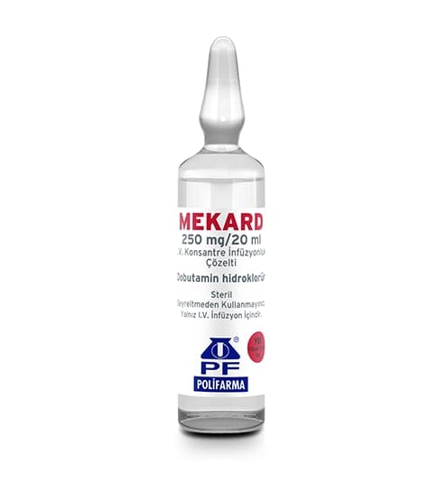

MEKARD 250 mg/20 ml I.V. KONSANTRE İNFÜZYONLUK ÇÖZELTİ

Ne için kullanılır
KT · Bölüm 1MEKARD inotrop ilaçlar olarak adlandırılan, kalp atımını daha kuvvetli hale getiren ilaç grubuna dahildir.
MEKARD’ın her bir ampulü 280 mg (250 mg dobutamin’e eşdeğer), mililitresi 14 mg dobutamin hidroklorür (12,5 mg dobutamin’e eşdeğer) içerir.
MEKARD, bir kutuda 10 adet bulunan 20 mL'lik renksiz cam ampullerde kullanıma sunulmaktadır. MEKARD aşağıda belirtilen durumlarda kullanılır; - Yetişkinlerde; MEKARD, kalp krizi, kardiyomiyopati (kalp kasının bir hastalığı), açık kalp ameliyatı, septik şok (kan zehirlenmesi) veya kardiyojenik şok (kalp debisinin yeteri kadar sürdürülememesi) ile ilişkili düşük kalp debisi durumunda inotropik (kalp kasının kasılmasını artırmak için) destek tedavisi gerektiğinde endikedir. MEKARD ayrıca ekspirasyon sonucu pozitif basınç Bu ilacı kullanmaya başlamadan önce bu KULLANMA TALİMATINI dikkatlice okuyunuz, çünkü sizin için önemli bilgiler içermektedir. • Bu kullanma talimatını saklayınız. Daha sonra tekrar okumaya ihtiyaç duyabilirsiniz. • Eğer ilave sorularınız olursa, lütfen doktorunuza veya eczacınıza danışınız. • Bu ilaç kişisel olarak sizin için reçete edilmiştir, başkalarına vermeyiniz. • Bu ilacın kullanımı sırasında, doktora veya hastaneye gittiğinizde doktorunuza bu ilacı kullandığınızı söyleyiniz. • Bu talimatta yazılanlara aynen uyunuz. İlaç hakkında size verilen dozun dışında yüksek veya düşük doz kullanmayınız ventilasyonunda (nefes verirken oluşan pozitif basınç) kalp debisini korumak veya artırmak için kullanılabilir. - Dobutamin stress ekokardiyografi: MEKARD ayrıca kalbin stres testlerinde, rutin egzersizi tam olarak yapamayan hastalarda, alternatif olarak kullanılabilir. Dobutamin bu amaçla, normalde egzersiz stres testi yapan birimlerde kullanılmalı ve testler için gerekli önlemler alınmış olmalıdır.
- Pediyatrik popülasyon Dobutamin tüm pediyatrik yaş gruplarında (yenidoğandan 18 yaşa kadar), kalp ameliyatı, kardiyojenik şok (kalp debisinin yeteri kadar sürdürülememesi), kardiyomiyopatiler (kalp kasının bir hastalığı) ve septik şok (kan zehirlenmesi) sonrası kalp dekompansasyonu sonucunda ortaya çıkan düşük kardiyak debili hipoperfüzyon (kanın vücutta yeteri kadar dağılmaması) durumunda endikedir.